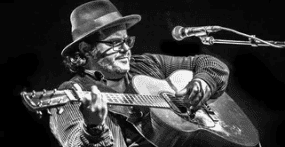
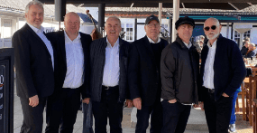
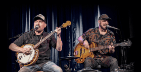
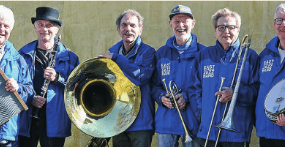
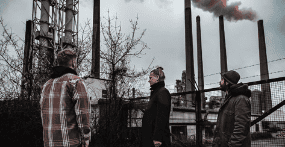
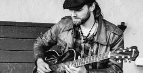
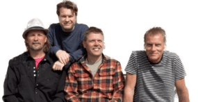

Kunstnere
Her kan du få et overblik over kunstnere som deltager i Den blå festival.
Adam Karch
Genre: Blues
Bluesscenen
Lørdag d. 19 - kl. 12.00
Entre: Gratis
Adam Karch
Adam Karch er en fremragende bluesmusiker fra Canada. Hans dygtighed som guitarist og hans unikke stemme gør ham til en bemærkelsesværdig kunstner.
Han har etableret sig som en af Canadas mest talentfulde og respekterede blueskunstnere, og kommer til Aalborg med en frisk award i bagagen. Karch vandt således dette års pan-kontinentale blueskonkurrence International Blues Challenge i kategorien Memphis Guitar Box Award (Best Solo/ Duo Guitarist).
Der er således lagt op til gedigen blues med afsæt i de klassiske rødder, og tillige et par overraskelser når Karch træder ind på scenen.
Advokatens New Orleans Jazzband
Genre: Jazz
Jazzscenen
Lørdag d. 19 - kl. 19.30
Entre: Gratis
Advokatens New Orleans Jazzband
Står for solid og pågående traditionel jazz i topklasse. Repertoiret er sammensat af gospel, evergreens og ikke mindst glad og swingende New Orleans jazz, som leveres med præcision, entusiasme og spilleglæde af et velfungerende team musikere.
Selvfølgelig kan der danses til Advokatens musik. Man kan også nøjes med at lytte, vippe diskret med foden og nyde de gode og kendte melodier. Og det kan være vanskeligt at holde humøret nede, når orkestret spiller.
Henrik Skårup: Klarinet Hans Lund: Banjo Morten Lund: Trombone Frank Overlund: Klaver Henrik Hougesen: Trommer Ole Christiansen: Kontrabas
Alain Apaloo Trio

Genre: Blues
Rocken
Lørdag d. 19 - kl. 21.00
Entre: Gratis
Alain Apaloo Trio
Bandet spiller et mix af Vestafrikansk Ørkenblues, Blues og Gospel. Genren kan beskrives som “trance blues” eller “ørkenblues”, som er kendetegnet ved inciterende rytmer og en funky bund som svinger som ind i h….
Musikken er på en gang fængslende, hypnotiserende og beroligende, men samtidig pågående og fuld af sprudlende energi.
Alain Apaloo (Togo): Vokal/guitar/bas Olav Poulsen (DK): Slide Sal Dibba (Gambia): Djembe & percussionntrabas
All Time Jazz Band
Genre: Jazz
Jazzscenen
Lørdag d. 19 - kl. 14.00
Entre: Gratis
All Time Jazz Band
All Time Jazz Band spiller musik med rødder i New Orleans. Repertoiret er stort og bredt, og foruden de kendte klassikere har bandet gravet numre op, som man ikke ellers hører, gerne med et par overraskelser til de efterhånden mange trofaste fans. Der er musik til både kendere og elskere af jazz, og til de, der troede, de ikke syntes om jazz.
Brønderslev Big Band

Genre: Jazz
Jazzscenen
Torsdag d. 17 - kl. 16.00
Entre: Gratis
Brønderslev Big Band
Brønderslev Bigband har eksisteret i snart 40 år og har musikere med fra hele landsdelen. Bandet har hvert år flere koncerter i landsdelen og har også spillet i bl.a. Berlin. Brønderslev Bigband er velspillende, med kapelmester Morten Lund Sletten Larsens suveræne greb om bigband traditionen. Repertoiret er krydret med sangnumre i Sinatra- og nutidige Michael Boublé-stilen, med vores egen crooner Allan Vester Lassen.
Creole Catz

Genre: Jazz
Jazzscenen
Fredag d. 18 - kl. 19.30
Entre: Gratis
Creole Catz
Et forrygende, festligt arrangement er serveret med Creole Catz’ medrivende og brede jazz- og boogie-repertoire. Der spilles bl.a. Louis Armstrong, Louis Prima og Louis Jordans swingende rytmer iblandet Just/ Frost New Orleans rytmer og Lillers og Buernes danske evergreens. Dette, kombineret med flerstemmig sang og swingende arrangementer, giver publikum en herlig jazzoplevelse.
Stig Fisker: Trompet, guitar, banjo og vokal Kim Jensen: Klarinet, tenorsax og vokal Nicolai Øgendahl Brandt: Piano og vokal Ivan Laugesen: Kontrabas Mads Holck Mogensen: Trommer og vokal
Downshifters
Genre: Blues
Kaffefair
Fredag d. 18 - kl. 15.00
Entre: Gratis
Downshifters
The DownShifters er en to-mands trio, der spiller blues- og rootsmusik. Med guitar, banjo, mundharpe, bas og fod-trommer fremfører de originale sange skrevet med stor inspiration i de gamle amerikanske musiktraditioner - helt fra akustisk/elektrisk delta blues til banjobaseret old-time. Duoen består af brødrene Bjerre, der har en lang historie som aktører i det østjyske musikmiljø.
Sune Bjerre: Guitar, banjo, sang og mundharpe Kasper Bjerre: Bas, sang og fodtrommer
East Harbour Jazz Band
Genre: Jazz
Jazzscenen
Lørdag d. 19 - kl. 16.45
Entre: Gratis
East Harbour Jazz Band
East Harbour Jazz Band forstår at sprede glæden ved jazzmusikken. Bandet består af rutinerede og entusiastiske jazzveteraner fra Nordjylland. De spiller en glad swingende jazzmusik, hvis rødder i New Orleans- og Dixieland jazzen altid er tydelige.
Jesper Gram-Hansen: Klarinet Niels J. ,,NISSE’’ Christensen: Trombone
Brian Toft: Kornet/vokal Jan Holmgaard: Trommer
Brian Bützau Olsen: Sousafon Per Foldberg: Banjo
Herøya Musikkorps Street Parade

Genre: Jazz
Jazzscenen
Lørdag d. 19 - kl. 12.00
Entre: Gratis
Herøya Musikkorps Street Parade
Street Parade, Start fra Holles Vinstue, Algade 57 via Gravensgade, Bispensgade, Nytorv og slutter på jazz-scenen på Gammel Torv.
De populære nordmænd/damer går gennem midtbyen og skaber en festlig optakt til lørdagens jazz-musik på Gammel Torv.
Ice Mo’ & The Zydecoolers

Genre: Blues
Bluesscenen
Fredag d. 18 - kl. 17.30
Entre: Gratis
Ice Mo’ & The Zydecoolers
Showet er fyldt med energi og glad musik, der giver dig lyst til at danse. Ismo “Ice Mo’ “ Haavisto er kendt som bluesmusiker, en uovertruffen sanger, guitarist og harmonikaspiller. Og så ind imellem tager han den traditionelle one-row-button-accordion og spiller Zydeco.
Ismo har skrevet mange Zydeconumre gennem årene, og det er dem du skal høre i dag. Det er også en tradition indenfor zydeco at inkludere familiemedlemmer i bandet, og The Zydecoolers har således Ismos søn Ukko og hans nevø Oskari som medlemmer.
Ismo “Ice Mo’ “ Haavisto: Vocal, zydeco accordion, harmonica Ukko “Yucco” Haavisto: Drums Oskari “Oscar” Haavisto: Guitar Ville “Wet Willie” Vallila: Bass Matias “Washboard Matt” Partanen: Washboard
Kant

Genre: Jazz
Stargate scenen, Studenterhuset
Fredag d. 18 - kl. 20.00
Entre: 50kr.
Kant
Kant er et auditivt kunstprojekt skabt af Rasmus Frandsen og Erik Michaelsen. Projektet figurerer i spektret mellem musik og lydkunst og bestræber sig også på at udviske grænsen mellem disse to begreber. Ved brug af selvskabte elektroakustiske instrumenter og konventionelle instrumenter skaber Kant improviserede værker.
Improvisationerne kan være inspireret af vores omgivelser, konkrete emner eller en udefrakommende tredjepart. Udtrykket af vores værker, vil være tanke- og følelsesvækkende for publikum, og bestræber sig på at få lytteren til at fokusere og tage stilling til hvad vedkommende oplever.
Det ultimative mål er at få lytteren til at føle eller opleve noget, som vedkommende ikke har oplevet før, med et ønske om, at lytteren får en oplevelse som er fuldkommen umiddelbar med minimale forudindtagelser.
Shadow Government
Genre: Jazz
Stargate scenen, Studenterhuset
Torsdag d. 17 - kl. 18.30
Entre: 50kr.
Shadow Government
Musikken strækker sig lige fra virtuose energiudbrud til inderlige smukke ballader. Deres exceptionelle sammenspil kan gå alle veje, derfor er det aldrig til at vide, hvor deres musikalske historier fører hen. I tillid til at alt kan opstå ud af næsten ingenting, har musikerne opnået et telepatisk sammenspil og overskud i komplicerede musikalske fortællinger.
Matias Fischer: Trommer Mads Houe: Bas Carsten Kær: Klaver
Tomi Leino Trio

Genre: Blues
Bluesscenen
Fredag d. 18 - kl. 15.30
Entre: Gratis
Tomi Leino Trio
Finske Tomi Leino Trio er et af de mest succesrige roots- og bluesbands i Norden i nyere tid. Bandets sound bygger på elementer fra bla. Louisiana swamp blues og rock’n’roll med respekt for klassisk bluessound men med et personligt og frisk touch.
Tomi Leino: Vokal, guitar, harpe Jaska Prepula: Bas, vokal Mikko Peltola: Trommer
Uni Debess Band
Genre: Blues
AbZalon Event Factory
Fredag d. 18 - kl. 20.00
Entre: 50kr.
Uni Debess Band
Uni Debess er en fremragende bluesmusiker fra Færøerne. Hans musik kombinerer traditionelle bluesrødder med unikke færøske elementer. Debess’ kraftfulde stemme og virtuose guitarspil har gjort ham til en bemærkelsesværdig kunstner. Han har optrådt på internationale festivaler og hans sange fortæller historier, der berører sjælen. Uni Debess er en bluesperle fra Nordatlanten.
Vestbyens Blues Band
Genre: Blues
Cafe Buddha
Lørdag d. 19 - kl. 16.00
Entre: Gratis
Vestbyens Blues Band
Ny konstellation af musikere fra forskellige sammenhænge. Primært fra Aalborg vestby, der spilles chicago og jump blues. Kendte numre i egne fortolkninger, med et dansevenligt twist.